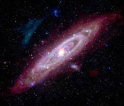

Andromeda Galaxy
Our Nearest Major Galaxy🚀 Quick Facts
- Designation: M31, NGC 224
- Type: Spiral (SA(s)b)
- Morphology: Sb
- Group/Cluster: Local Group, Laniakea Supercluster
- Diameter: 152,000 ly (stellar disk) – 220,000 ly (halo)
- Stellar Mass: 1.1 × 10¹² Solar Masses
- Total Mass: 1.5 × 10¹² Solar Masses
- Luminosity: 26 × 10⁹ Solar Luminosities
- Star Count: ~1 trillion
- Redshift (z): -0.001 (blueshift)
- Distance from Earth: 2.537 million ly
- Coordinates:RA 00h 42m 44s, Dec +41° 16′ 09″
- Constellation: Andromeda
- Apparent Size: 190′ × 60′ (6× full Moon length)
- Location in Universe: Local Group center

A picture of The Andromeda Galaxy
What is a Galaxy?
A galaxy is a massive system of stars, gas, dust, and dark matter bound together by gravity.
📌 Did You Know?
- Headed toward Milky Way at 110 km/s – collision in 4.5B years
- Contains ~460 globular clusters
- Has a double nucleus – possibly two SMBHs or dust lane illusion
🔭 Observation and Discovery
- Apparent Magnitude: +3.44 (naked eye visible)
- Discovery: First recorded in 964 CE by Persian astronomer Al-Sufi
- Best Time to View: October–December
- Viewing Difficulties: Faint extended glow needs dark skies
- Notable Observations: Hubble identified Cepheids (1923), proving external galaxies
🔬 Scientific Data
| Bulge/Bar: Large classical bulge, weak/absent bar |
| Disk: Inclined 77° to our line of sight |
| Halo: Extensive, metal-poor, many streams from cannibalized dwarfs |
| Nucleus: P1/P2 double structure, SMBH ~100M solar masses |
| Satellite Galaxies: Around 40 known |
⭐Stellar Population & Content
- Star Formation Rate: 0.4 solar masses per year
- Stellar Populations: Older average age than Milky Way
- Interstellar Medium: Less gas than Milky Way, possibly "red and dead" phase
- Notable Features: Giant Stellar Stream (tidal debris), satellite plane
🌀 Dynamics & Future
- Rotation: 225 km/s at 38,000 ly radius
- Interaction Status: Possibly merged with M32 with a future collision with Milky Way
- Future Fate: Merge with Milky Way in ~4.5B years → "Milkomeda"
⁉️ Big Questions & Oddities
- Unique Features: Closest major galaxy, naked-eye visible
- Scientific Importance: Proved galaxies exist beyond Milky Way
- Mysteries: Why is star formation low despite gas? Double nucleus true nature?
📊 Among Major Galaxies
| Galaxy | Total Mass | Size Rank | Diameter | Special Feature |
|---|---|---|---|---|
| Andromeda | 1.5x1012 Solar Masses | 1st - Largest | 220,000 light years | Naked-eye, double nucleus, future Milky Way collision |
| Milky Way | 1.5x1012 Solar Masses | 2nd | 105,000 light years | Our home, barred spiral, Fermi Bubbles |
| Whirlpool (M51) | 2.6x1011 Solar Masses | 3rd | 76,000 light years | Grand design spiral, interacting companion |
| Triangulum | 5.0x1010 Solar Masses | 4th | 60,000 light years | Bulgeless spiral, NGC 604 giant HII region |
| Sombrero | 1.0x1012 Solar Masses | 5th | 49,000 light years | Edge-on with dust lane, 2,000 globular clusters |
🧠 Quick Quiz
Q: How is Andromeda moving relative to the Milky Way?